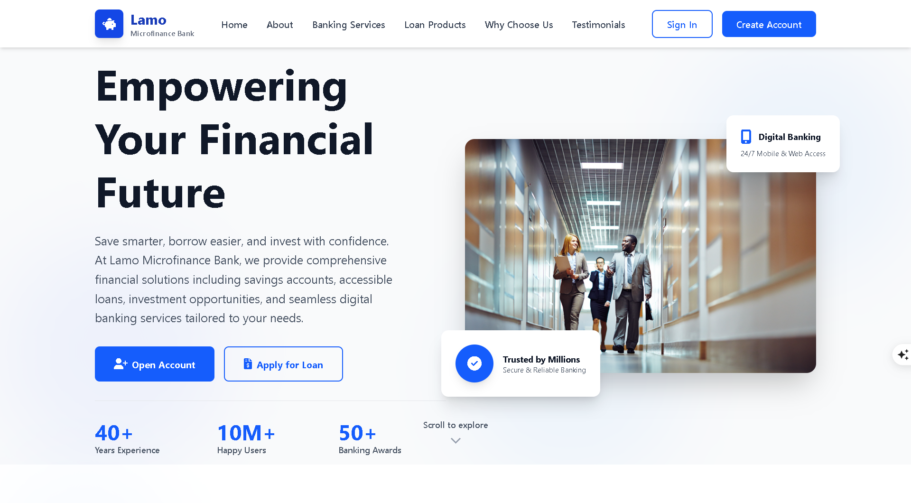
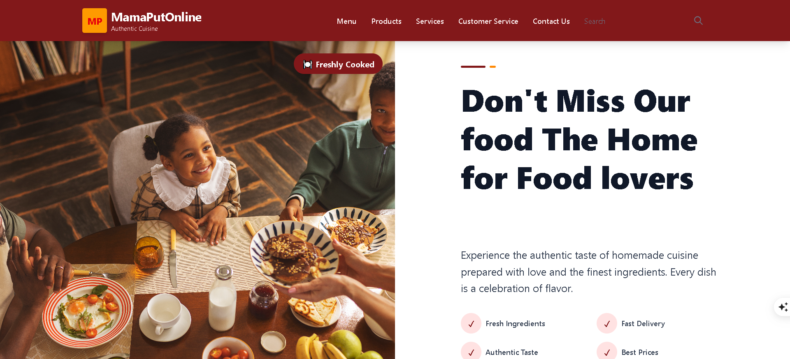

Nexus web experience
UIA polished landing experience focused on visual clarity, layout rhythm, and strong call-to-action sections.
HTML
Tailwind CSS
I’m building polished, high-quality web experiences with HTML, CSS, Tailwind, and a growing passion for full stack development.

About me
I’m Chijioke Emmanuel Nnekwelugo an aspiring full stack developer & AI Enthusiast driven by curiosity, consistency, and the desire to make the web feel more useful and beautiful. My journey started with a simple question: how do websites come to life? That question quickly turned into a passion for building with code.
Right now, I’m strengthening my foundations in HTML, CSS, Tailwind, and responsive UI while building personal projects that let me learn by doing. Every revision, every bug fix, and every successful launch shapes the developer I’m becoming.
I’m always reading docs, trying new tools, and turning feedback into stronger features.
I focus on milestones that move me closer to becoming a confident full stack engineer.
I learn through experimentation, iteration, and staying calm when a build breaks.
Skills
Built into my day-to-day workflow
The next milestone on the roadmap
Projects
A polished landing experience focused on visual clarity, layout rhythm, and strong call-to-action sections.

A personal brand page built around storytelling, high-contrast typography, and a calm modern visual system.

A product-style bank full website view with clean information hierarchy, emphasis on trust, and conversion-friendly sections.

A restaurant-style experience with social proof, a clear visual story, and conversion-focused sections.
Explore a collection of AI-powered solutions I have built and experimented with, showcasing my growing skills in artificial intelligence, automation, and problem-solving.
A concise exploration of how artificial intelligence is reshaping innovation, ethics, and everyday life, with a clear view of how AI influences work and creativity.
Technology used
A sentiment analysis project exploring online comments about Arise News, with a focus on how audiences respond to stories around politics, development, and culture.
Technology used
A modern digital news and blogging platform designed to keep readers informed with breaking stories, trending topics, and a polished reading experience.
Technology used
Contact
Whether you need a landing page, a portfolio refresh, or a small product concept, I’d love to jump in and help shape it.
Availability
I usually reply always and am open to freelance, collaboration, and new opportunities.